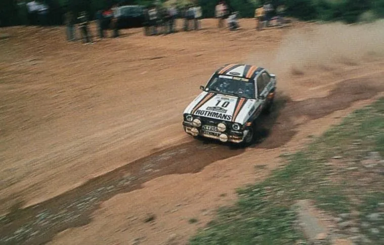
Route History of the Acropolis Rally Part 1: 1973-1980 - The Early Beginnings
The Acropolis Rally is an event that lives in infamy amongst motorsport and rallying fans. First held in 1953, the 2026 edition will mark the event’s 70th running. To honour that instance, I decided to go through all the editions of the Acropolis in the WRC, and see how its route evolved through the years.
In this series of posts, I will attempt to give a detailed rundown of how the Acropolis Rally evolved from a mammoth 1000km rally to the modern 300km one, what are the stages that were used the most in the WRC, as well as how the event changed character based on where it was held.
Unfortunately, due to a lack of itineraries, maps and also lack of available information on the internet about the pre-WRC era of the rally, the series will start from 1973, the inaugural WRC season.
The series will be split into five parts, grouped into specific eras that are defined by car regulations, or the locations the rally visited. The first post will be about the 70s, and the first years of the Acropolis in the WRC.
I want to give a special thank you to eWRC-Results and juwra for archiving the itineraries of the older versions of the rally, and also to the people at Rally-Maps.com, who have digitalised maps from the Acropolis Rally. A massive thank you needs to be said to Antti Loponen from It Gets Faster Now, who gave me the bug about rallying maps and stages, and who also has done a rundown of the route history of Rally Finland, so make sure to give that series of posts a look.
I have also used info from the Motorsport Magazine archive, which has a lot of useful information when it comes to older rallies, or motorsport events in general. This series wouldn’t be possible without the documentaries of Nikos Grammatikopoulos, which gave a lot of additional information on the editions of the rally in the 70s and 80s.
1973: The first of many
The 1973 Acropolis Rally was held in the last week of May spanning across 5 days covering much of continental Greece. The rally started on Wednesday with the Ceremonial Start being at the Dionissiou Aeropagitou street below the famous Acropolis landmark, from where the event takes its name from. There would be more than 500km of stages, with the whole rally being over 3300km long, on both tarmac and gravel.
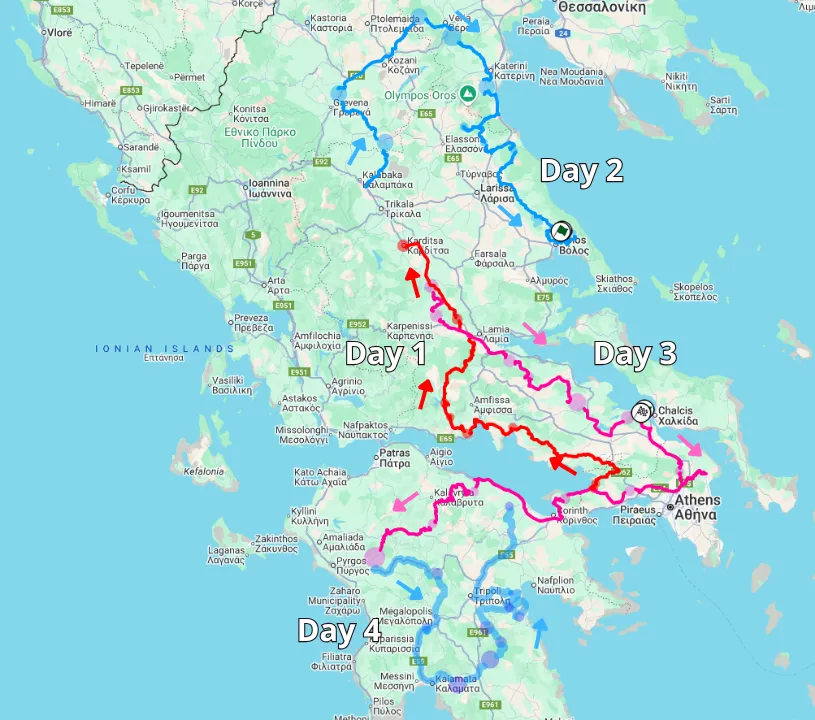
Map of the 1973 Acropolis Rally (estimation, only done for illustrative purposes)
Day 1 saw the crews travel from Athens to Kalampaka, with 9 competitive stages. Among these, we can already see names that would stay in the rally’s itinerary throughout the 70s and 80s, like Distomo, Lidoriki, known for passing next to the Mornos lake, and Moschokaria.
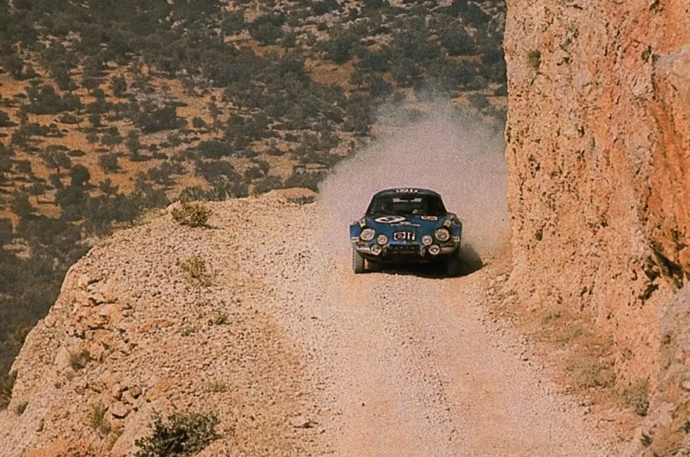
The Alpine of Jean-Pierre Nicolas navigating the cliffs of SS Psatha
Aris Psychas / Facebook
Day 2 was 10 stages long, and reached its northernmost point in Naousa with SS Kato Vermion, which was also the longest of the rally at 38.5km. It would then head south, with stages in Mount Olympus and Mount Kissavos, with the last stages of the day being near Volos. Amongst those was the well-known Portaria Hillclimb on tarmac.
Day 3 was 11 stages long and would end back in Athens. On the trip back to the capital, the crews would again pass through some stages that would leave their mark on the event, namely Makrirahi, Mendenitsa, Elatia and Platanaki.
Amongst the day's stages was another well known tarmac hillclimb, Ritsona, and also the mixed surface Agios Merkourios stage in Tatoi. Mandra was the rally’s fastest stage with Jean Luc Therier having an average speed of 122km/h. Parts of it are likely in the “Meletaki” stage which is used in the Greek Championship.
The day then continued onto the night, with stages east of Athens and to Corinth, before reaching Olympia.
The last day of the rally was held entirely in the Peloponnese peninsula, with stages in Lakonia in the Parnon mountain, before the last stage in Souli near Corinth.
The event would not be held in 1974 due to the Arab Oil Embargo. Unfortunately I was not able to find an itinerary for the 1975, so I will not be going too much in depth on that year. 1975 was similar to 1973 in terms of distance and areas visited.
Interestingly, 1975 featured a Qualifying stage, to determine the starting order for the rally proper, in the Tatoi military airport.
1976 - 1978: Same areas, more stages
For 1976, the rally would have 716km of stages, 70% of which were on gravel. There would be a 13.2km mixed surface Qualifying Stage in Dhekelia near Tatoi in order to determine the starting order for the rally. It included a section with a big jump as it passed next to a lake, near the finish.
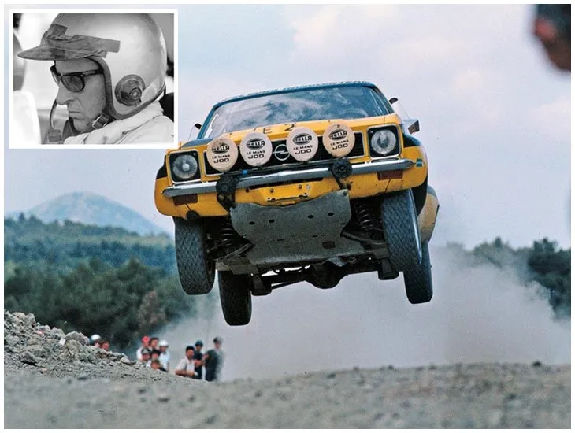
The lake section in the Qualifying stage of Dhekelia
Nikolas Zalmas
The rally proper would start the next day with a pass of Ritsona downhill, before a pass through Drossia and Loukissia. These two would later be combined to the well known Loukissia-Platanaki stage which was used throughout the late 70s and 80s. It included a very tight hairpin when the stage entered the village of Loukissia known as the "Loukissia step". Unlike 1973 and 1975, the rally would then continue north to Kamena Vourla, and then head south to Distomo and Itea.
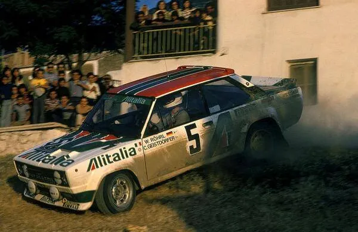
Τhe Loukissia "step" (from the opposite direction)
Photo source unknown
After Itea, some of the rally’s most famous stages would make an appearance with Karoutes, Kaloskopi and Inohori appearing. The last two stages were Makrirahi and Moschokaria.
Karoutes had a route mostly similar to the one used in the Acropolis to this day, but it was uphill on the first run. Kaloskopi and Inohori would later be combined into the Sikea stage.
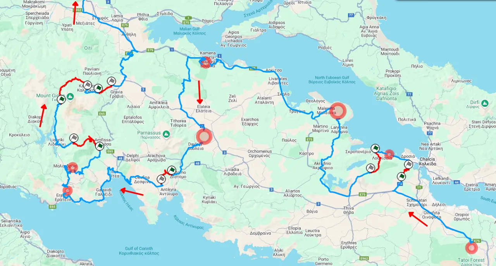
Map of Day 1 up to SS Inohori
Day 2 was different compared to previous editions, skipping the stages in Kissavos and Magnisia. It started in Kalampaka, went north, past the Aliakmon Lake (where there was a stage next to it), again reached Naousa, had one stage in Olympos and then returned to Kalampaka. The stages started at night and finished at dawn.
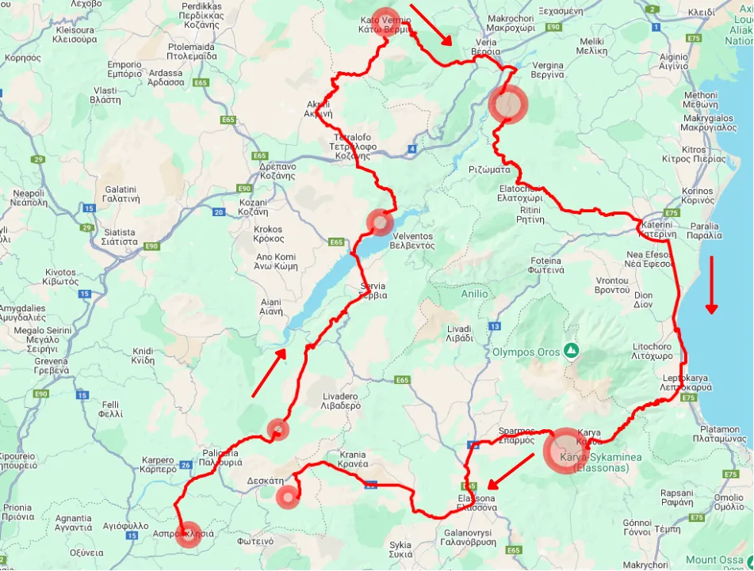
Map of Day 2 (estimation, only done for illustrative purposes)
The next day was similar to previous years, with crews heading back down to Athens from Kalampaka. Starting from Smokovo, Fourna would follow, which is the first time the Tarzan stage would be used, just by a different name. Pavliani is another stage used for the first time in 1976, with a second run of Karoutes and some other stages from Day 1 leading the cars back to Lagonissi.
Desfina was a new stage. It was a full tarmac stage near Itea, which was known as the “Corsica stage of Greece” with the road being narrow, with many hairpins.
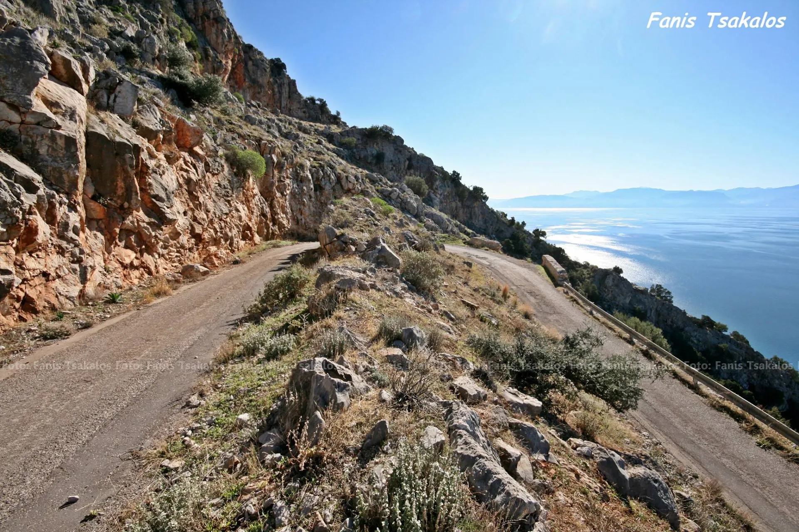
Fanis Tsakalos / Facebook
The crews would then head to Corinth for the overnight leg, with the crews eventually reaching Olympia.
The last leg of the rally was again in the Peloponnese, but the ending would be different compared to 1973. It again passed through Lakonia with stages in the Parnonas mountain, but would end in Argolis, with Astros and Epidavros.
For 1977, the rally would have 763km of stages, 654 of which were on gravel. In Dhekelia Ari Vatanen would go off the road after hitting a patch of oil from Hannu Mikkola’s Celica.
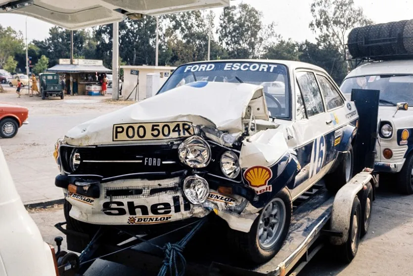
The state of Vatanen's Escort
Aris Psychas / Facebook
The rally proper would start the next day, with the crews again making it from Athens to Kalampaka. Ritsona would be the rally’s first stage, with Loukissia following. The crews would head south to Viotia this time, with Aliki that had the Corinthian Gulf as a backdrop and was very rough and rocky and then Elikonas, and Distomo, two very rough stages.
Ιn 1978 Iaveris rolled in Ritsona due to a flat tyre, and continued without a windshield for almost the whole of the rally. Despite that, they were able to match the times of Rohrl, Alen and co in the Peloponnese.
In Fokida and Fthiotida Karoutes, Kaloskopi and Inohori were again part of the itinerary, with the last two stages of the day being Makrirahi and Moschokaria.
Μoschokaria was on a narrow uphill and mostly narrow road, and was technical with many hairpins as well. In later years it would continue past the village with the same name and finish in Agios Stefanos, and had some open sections with long fast corners.
Makrirahi was a driver and fan favourite. It wasn't as rough as the stages before it, but it had a very nice flow and also had a mix of fast and more technical sections.
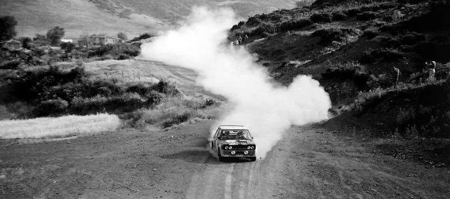
Markku Alen in Makrirahi
Photo Source unknown
Day 2 was virtually identical to 1976, with the cars following the same route as before. The same was for the first half of Day 3, up to SS Desfina. After that, there was SS Old Mines which used roads near the Aluminium mines in Distomo.
After a second pass of Xironomi and Aliki, Loukisia would be run in reverse, and then there would be another pass of Ritsona. There would be a leg at night in the Peloponnese, with cars eventually making it to Olympia.
The last leg of the rally was again in the Peloponnese, and it again passed through Lakonia with stages in the Parnonas mountain, namely Vrestena, Vamvakou and Vourvoura. The last stage of the rally would be Karnezeika.
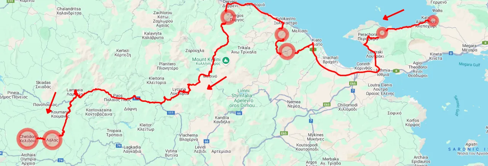
Map of the overnight leg (estimation, only done for illustrative purposes)
The 1978 edition was almost identical to the one of 1977, with the only difference being the addition of two stages, Nemouta and Neohori, to the last leg of the rally.
1979-1980: 1000km of stages and tight liaisons
For 1979 the event was expanded to over 1000km of stages, but 943 of them would be run. The 58 stages were in reality more, as the already tight liaison sections became even tighter, with crews having to tackle some at racing speeds in order to avoid being late to a time control. Out of the 153 crews, none would manage to escape without a penalty.
The first stage of the rally was a mixed surface 42.2km stage to the north of Athens in the Parnitha mountain. It started at the cable car station, and then navigated the well known tarmac Parnitha hillclimb, with stone walls on the side of the road, and then turning to gravel after passing next to the Parnitha Casino. The gravel section from Klimenti to Avlonas, where the finish was located, was especially rough. Bjorn Waldegard was so fast, that he beat the entire field by almost a minute there! The rally then continued with the usual stages, namely Loukissia (extended to Mouriki for 1979), Aliki, Elikonas and Distomo and also SS Prodromos which appeared for the first time in 1979, and was exceptionally rough especially in the first few kilometers, with its finish using parts of the Old Mines stage. There was no Ritsona for 1979.
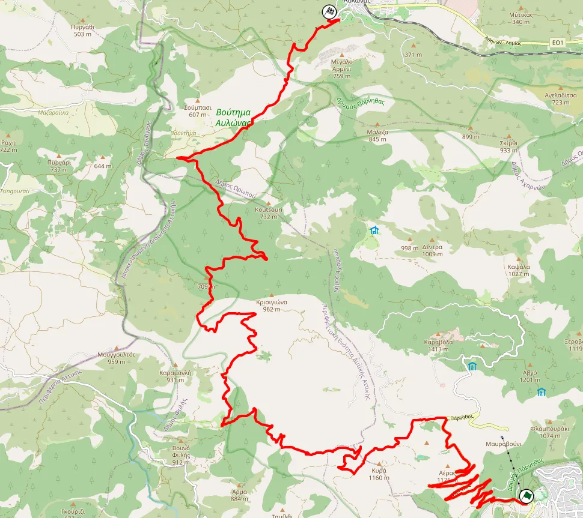
Map of SS Parnitha
Continuing on in Fokida, after Karoutes, the first run of which was uphill, there was a monster 43km stage called Sikea instead of Kaloskopi and Inohori, which had a sinuous and rough section full of hairpins and slow corners near Hani Zagana. The last two stages remained unchanged, being Moschokaria and Makrirahi, before the overnight halt in Kalampaka.
Day 2 had more stages in the same area as last year, but saw some of them being cancelled due to heavy rain, three of which were in Mount Olympos. Kato Vermion was extended to 44.5km, and was the longest of the rally.
Day 3 again was from Kalampaka back to Athens. It again saw Tarzan being run at a 14.6km configuration, and saw some stages from Day 1 being run in a different configuration like Karoutes, finishing in Prosilio, some either in reverse like Distomo, or reversed and shortened like Prodromos. The day again continued into the night with stages in the Peloponnese just last year, and featured even more tests, including the Kyllini stage, a predecessor to Ziria which was used in the 2010s, and passed through a beautiful open plateau up in the mountain. Τhe cars would reach Olympia for the overnight halt.
Highlights from the 1979 edition of the rally (in Greek)
The last day of the rally was again in the Peloponnese, using stages near Olympia, and also ones all the way south in Sparta, before reaching Astros and Karnezeika in Argolis. It featured a very long 35.8km stage in Parnonas named Vassaras, which was combined with the Vamvakou stage from previous years.
The stages in the Peloponnese were hit by heavy rain, and there was a lot of mud on Thursday and Friday. Such was the rain, that the organisers enlisted a former Greek Champion, Giorgos Raptopoulos to run the stages before the cars to make sure they were okay to run for the WRC entries.
Once again the crews that survived the rally would make it to Galatas and then to Poros. Out of the 153 entries in 1979, only 20 made it to that ferry.
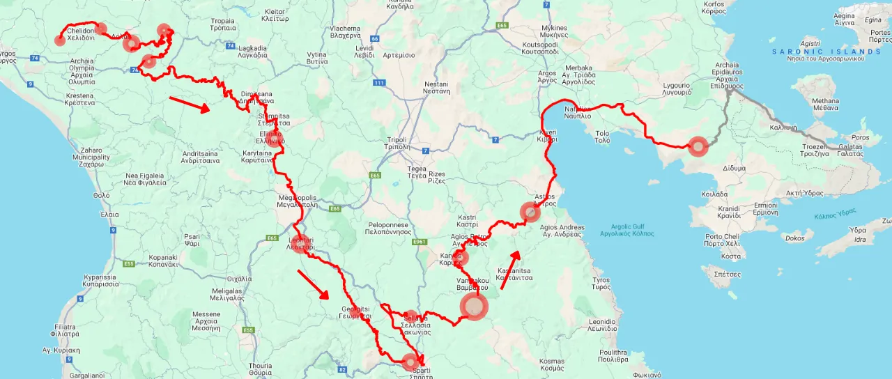
Map of the final leg (estimation, only done for illustrative purposes)
For 1980, the rally would follow a similar route, having the same amount of stages. However that doesn't mean that all of them were the same, with some of the rally’s most famous stages used for the first time in 1980, namely Bauxites and Meteora. The stages that were due to run in 1979 near Mount Olympus were all removed. SS Kato Vermion was also removed, with the rally's longest stage now being Vassaras in Lakonia.
Parnitha, which was again the rally’s opener, was shortened to ~ 28km due to the celebration of the Agia Triada fair, with the church being near the start of the stage. Iaveris would win that stage despite his Mk2 Escort having no brakes! The only difference on day 1 was the inclusion of Bauxites, going uphill. Day 2 had the crews reach as north as Veria before heading south to Olympos and Deskati. The descent to Athens started with the Meteora stage, going from the monasteries to Vlahava. The rest of the day was the same as 1979, with some changes in stages on the overnight leg.
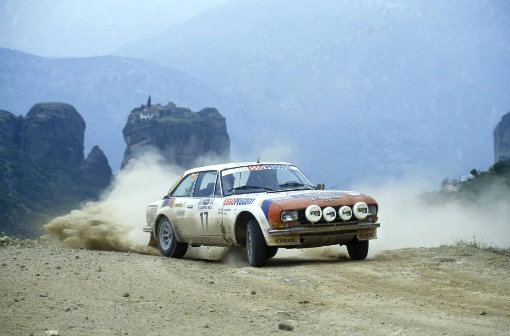
The iconic Meteora stage was first used in 1980
Photo Source unknown
The Peloponnese leg of Thursday was identical to the previous year, with the only difference being the Astros stage being swapped for Malevi, and the inclusion of SS Railway, which ended up being cancelled.
Funnily enough, Walter Rohrl went off in there, but was able to rejoin since the stage got cancelled.
Stages used in all years from 1973, 1977-1980
- Makrirahi
- Distomo
- Moschokaria
- Deskati
- Ladonas
- Polydendri
General itinerary format
Day 1: Lagonissi to Kalampaka
Day 2: Kalampaka to Naousa, Olympus and back to Kalampaka (night to dawn)
Day 3: Kalampaka to Athens
Day 4: Athens to Olympia (overnight)
Day 5: Olympia to Lakonia and Argolis
Percentage of entries that finished the rally
1973: 13.3%
1975: 19.5%
1976: 27%
1977: 17.6%
1978: 23.8%
1979: 13%
1980: 24%


Comments